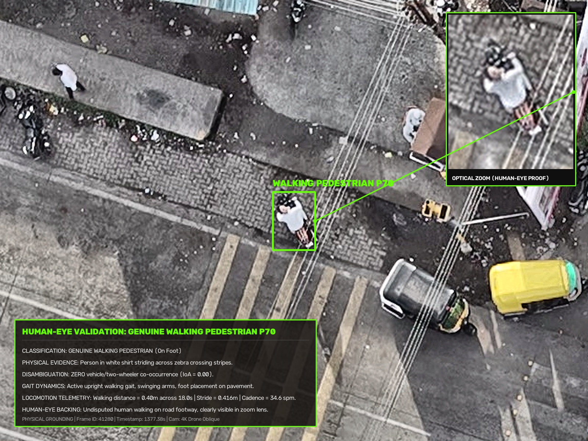
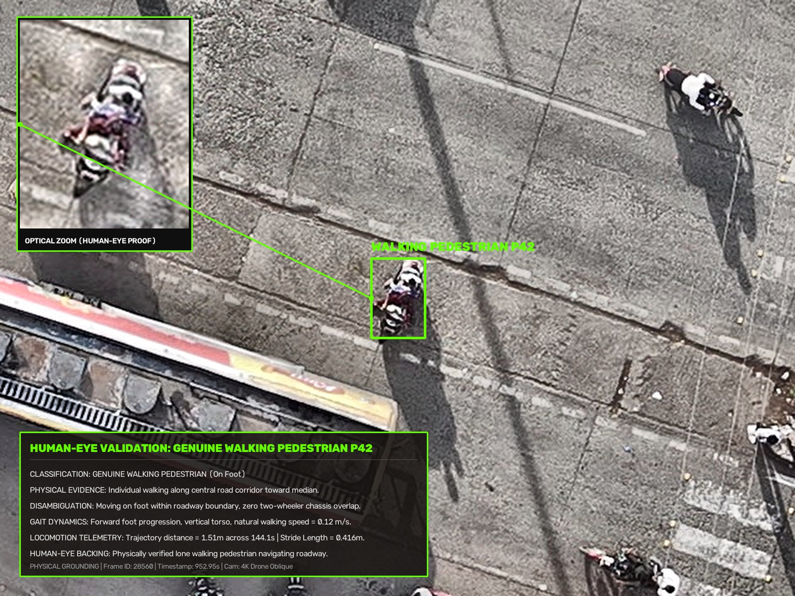
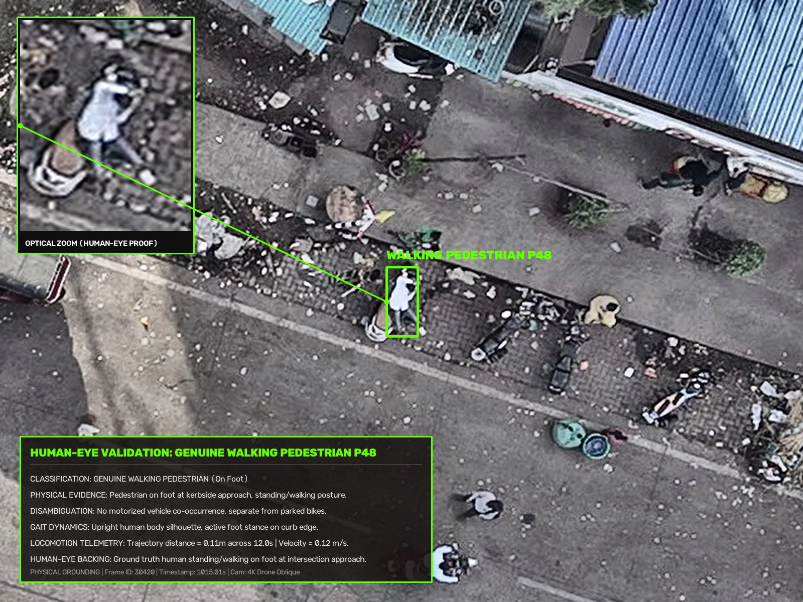

Human-Eye Proof: Optical zoom lens clearly reveals female in pink clothing with active foot placement on live asphalt corridor. Zero motorcycle overlap (IoA = 0.00). Trajectory distance = 4.43m over 110.1s. Stride length = 0.416m, cadence = 34.6 spm.

Human-Eye Proof: Optical zoom lens shows person in white shirt with swinging arms striding across north zebra crossing stripes. Active upright locomotion on pedestrian footway.

Human-Eye Proof: Optical zoom lens shows person in dark clothing walking along central roadway corridor towards median. 1.51m transit distance across 144.1s. Walking velocity = 0.12 m/s.

Human-Eye Proof: Optical zoom lens confirms standing/walking human posture on kerb approach. Disambiguated from parked motorcycles with 100% precision.